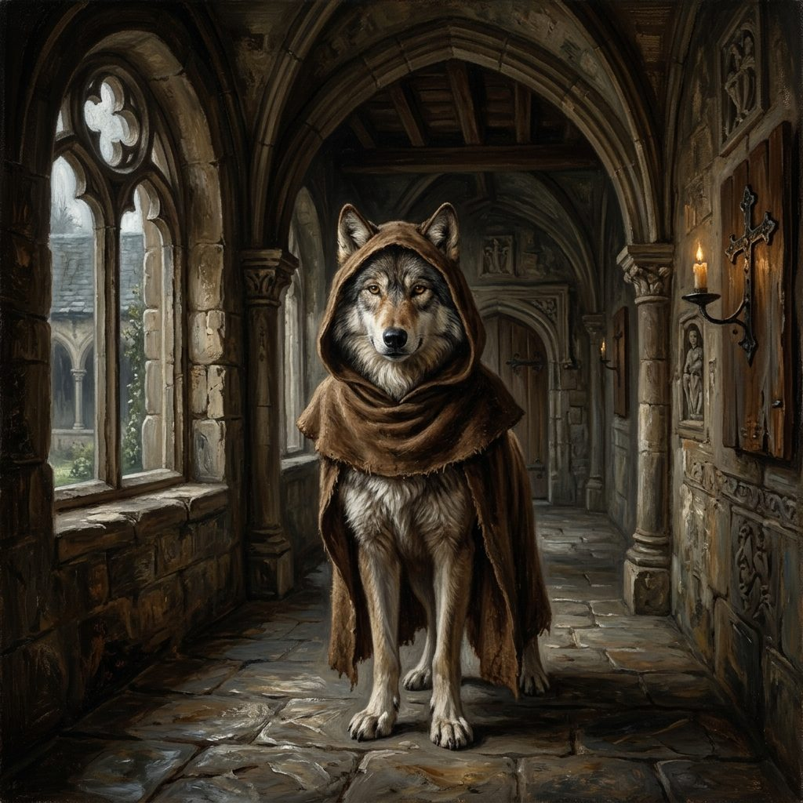
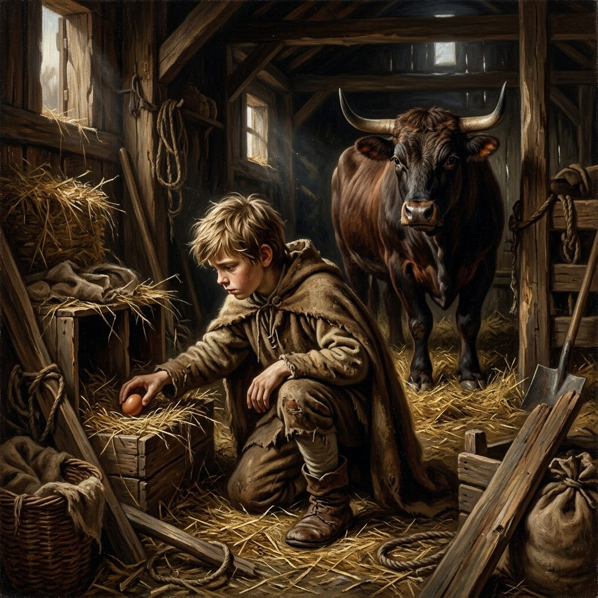
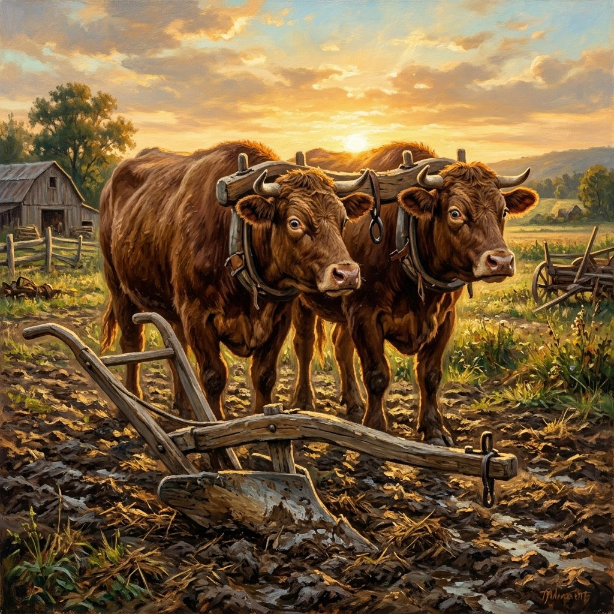
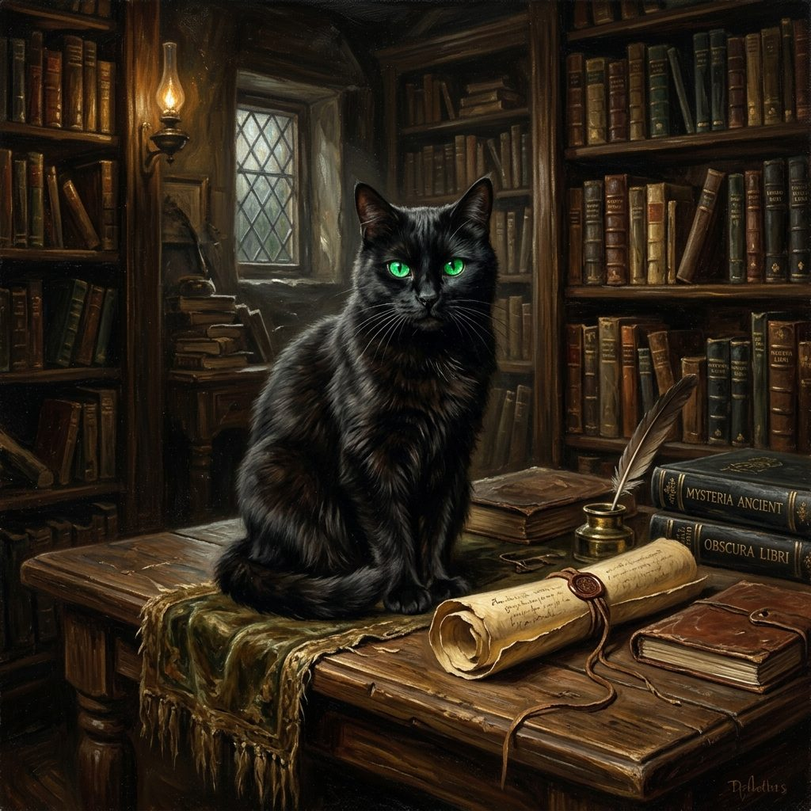
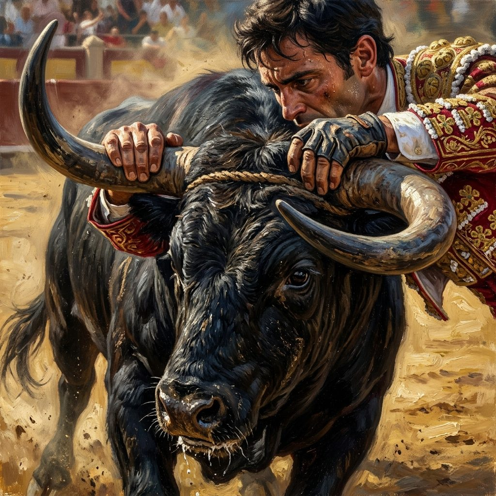

00 Bienvenue dans le monde des expressions figurées !
Sais-tu ce que signifie « donner sa langue au chat » ou pourquoi on conseille de ne pas « mettre la charrue avant les bœufs » ? Dans cette leçon interactive, tu vas explorer le sens caché de ces expressions populaires pour enrichir ta lecture et ton vocabulaire.
• Le proverbe est une phrase complète, souvent très ancienne, qui exprime une vérité générale, un conseil ou une leçon de morale (ex : « Qui vole un œuf, vole un bœuf »). Il s'utilise tel quel.
• L'expression figurée (ou idiomatique) est un groupe de mots imagé que l'on intègre dans une phrase pour rendre le discours plus vivant (ex : « donner sa langue au chat »). Il faut conjuguer le verbe selon la phrase.
• Le sens propre est le sens premier, littéral des mots (ex : dans « le fermier attache la charrue aux bœufs », on parle d'un vrai outil agricole et de vrais animaux).
• Le sens figuré est un sens imagé, abstrait (ex : dans « tu mets la charrue avant les bœufs en commençant par le dessert », on utilise l'image agricole pour dire qu'on fait les choses dans le mauvais ordre).
01 Jeu d'association : Reconstitue les proverbes (12 couples)
Associe la partie gauche (début du proverbe) à la partie droite (fin du proverbe). Clique sur un élément à gauche, puis sur sa correspondance à droite.
Début du proverbe
Fin du proverbe
02 Jeu de sens : Associe l'expression à son explication (12 couples)
Trouve le sens caché des expressions figurées. Clique sur une expression populaire à gauche, puis sur son explication à droite.
Expression
Signification
03 Dégager la morale : Histoires à proverbes (10 récits)
Lis attentivement ces 10 histoires courtes de la vie quotidienne. Choisis à chaque fois le proverbe ou l'expression qui correspond parfaitement à la morale du récit.
Thomas se vante beaucoup d'être le meilleur attaquant de l'école. Durant toute la récréation du vendredi, il clame devant tout le monde qu'il marquera au moins six buts lors du match de samedi contre l'équipe voisine. Mais une fois sur le terrain, sous les yeux de tous ses camarades venus l'encourager, Thomas rate plusieurs passes faciles et ne parvient pas à cadrer un seul tir. Son entraîneur s'approche de lui et lui dit : « Allez Thomas, montre-nous ce que tu sais faire au lieu de parler. »
Proverbe correspondant :
Élise a un grand contrôle de géométrie vendredi. Son camarade de classe, Maxime, lui conseille de ne pas s'en soucier : « Tu liras les formules jeudi soir à minuit, ça prend dix minutes ! ». Élise préfère refuser et réviser calmement quinze minutes chaque jour dès le lundi. Le jour de l'examen, Élise termine sereinement avec une excellente note, tandis que Maxime, stressé et fatigué par sa nuit blanche de dernière minute, n'arrive pas à résoudre les exercices.
Proverbe correspondant :
Un matin, Lucas trouve un petit crayon gris très usé sur le bureau de son voisin de classe. Bien qu'il sache à qui il appartient, il le glisse dans sa trousse en se disant : « Ce n'est qu'un vieux bout de bois, ce n'est pas grave du tout ». Le mois suivant, encouragé par l'impunité, il dérobe un stylo plume neuf. À la fin de l'année scolaire, Lucas est surpris en train de voler la tablette tactile de la classe.
Proverbe correspondant :
Maxime porte un superbe blouson de cuir de motard professionnel orné d'écussons sportifs. Il aime marcher d'un air mystérieux dans la cour de récréation, laissant croire à tout le monde qu'il est un aventurier courageux et intrépide, prêt à faire face à tous les dangers de la rue. Mais soudain, un tout petit chien caniche inoffensif s'approche de lui en jappant. Maxime hurle de terreur et court se réfugier derrière un buisson.
Proverbe correspondant :
Sarah et ses camarades doivent réaliser un grand panneau d'explications sur les volcans pour le cours d'éveil. Sarah insiste immédiatement pour commencer par dessiner les petits cadres de titre, peindre les bordures en rouge feu et coller les paillettes décoratives. Ses équipiers tentent de lui expliquer qu'il faut d'abord mener les recherches scientifiques et rédiger les textes informatifs, sinon ils ne sauront pas où placer les décorations.
Proverbe correspondant :
Léa a envoyé une peinture au grand concours artistique de la commune. Persuadée d'être la plus talentueuse, elle est certaine de remporter le premier prix de 100 €. Sans attendre les résultats du jury, elle emprunte 80 € à son frère pour acheter un nouveau jeu vidéo, affirmant qu'elle le remboursera dès que la mairie lui remettra son prix. Le jour des résultats, Léa apprend qu'elle a fini troisième et n'a reçu aucune récompense financière.
Proverbe correspondant :
Arthur s'est lancé dans la construction d'une cabane en bois au fond de son jardin. Ses amis se moquent un peu de lui, car il n'y travaille qu'une demi-heure chaque mercredi, en ne clouant qu'une ou deux planches à chaque séance. Les semaines et les mois passent, et les travaux semblent n'en plus finir. Pourtant, à la fin de l'année, la cabane d'Arthur est entièrement construite, parfaitement étanche et solide.
Proverbe correspondant :
Une dispute mineure éclate dans la cour entre Clara et Julie au sujet d'un ballon de basket. Chloé assiste à la scène. Au lieu d'essayer d'apaiser les tensions ou de proposer de partager le ballon, elle s'empresse d'aller voir Clara en secret pour lui inventer des propos méchants que Julie aurait dits sur elle. Elle fait ensuite de même avec Julie. La dispute éclate violemment entre les deux amies.
Proverbe correspondant :
Le grand-père de Hugo lui propose une devinette mathématique assez compliquée. Hugo commence à y réfléchir, écrit deux opérations sur une feuille de papier, mais s'agace rapidement de ne pas trouver immédiatement la réponse. Au bout de seulement trois minutes de réflexion, il jette son crayon en soupirant : « C'est trop difficile pour moi, j'abandonne, grand-père, donne-moi la réponse. »
Proverbe correspondant :
Camille a promis à son papa dès le lundi matin qu'elle rangerait son armoire et ses jeux de société avant la fin de la semaine. Elle reporte l'action jour après jour. Le dimanche soir arrive, il est 21h30 et Camille n'a toujours rien fait. Voyant l'heure tardive, elle se précipite dans sa chambre et range tout en vitesse avant d'aller se coucher. Son papa constate le travail bien fait et lui sourit.
Proverbe correspondant :
04 Vocabulaire Visuel : Les expressions illustrées (6 dessins réalistes)
Observe les illustrations artistiques réalistes ci-dessous. Clique sur une illustration pour l'agrandir et lire ses origines historiques en détail. Puis réponds au quiz pour identifier chaque expression.

Illustration 1
Un loup majestueux vêtu d'une bure de moine...

Illustration 2
Un garçon dérobant un œuf sous les yeux d'un bœuf...

Illustration 3
Une charrue rustique attelée devant les bœufs...
Illustration 4
Une ruelle pavée de nuit sous une pluie battante...

Illustration 5
Un chat noir aux yeux verts près d'un parchemin...

Illustration 6
Des mains saisissant de grandes cornes de taureau...
ℹ️ Clique sur une des 6 cartes d'illustrations ci-dessus pour lire les détails culturels et l'histoire de chaque expression !
Titre de l'illustration
Description et explications de l'expression...
05 Dico & Curiosités
Découvre les origines de certaines expressions et recherche des définitions dans le dictionnaire interactif.
Qui vole un œuf...
Cette expression date du Moyen Âge. À cette époque, l'œuf représentait la plus petite valeur possible pour de la nourriture, tandis que le bœuf était le bien le plus précieux du paysan. L'expression rappelle qu'un petit vol montre une mauvaise moralité qui peut mener à de grands crimes.L'habit ne fait pas le moine
Dès le XIIIe siècle, ce proverbe dérive de Plutarque. Au Moyen Âge, des brigands se déguisaient en moines pour s'approcher des voyageurs sans éveiller les soupçons et les dévaliser facilement. Il rappelle de ne pas se fier aux seules apparences vestimentaires.Donner sa langue au chat
Autrefois, au XIXe siècle, on disait « jeter sa langue au chien » (abandonner ses restes de paroles). L'expression a évolué avec le chat, considéré comme un animal de compagnie mystérieux et gardien des secrets. Donner sa langue au chat signifie lui confier le secret qu'on ne trouve pas.Recherche une expression par mot-clé ou filtre par catégorie pour découvrir sa signification et un exemple concret.